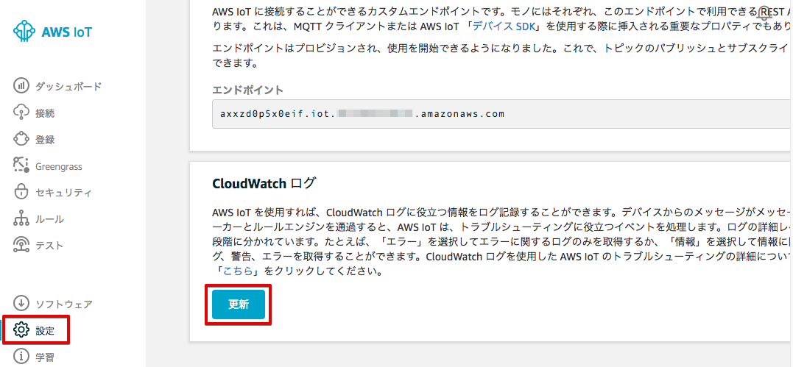
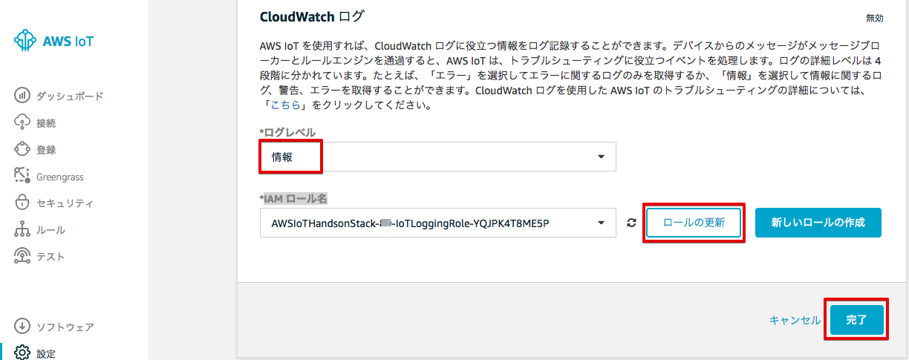
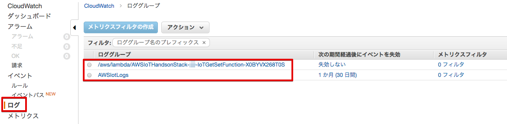
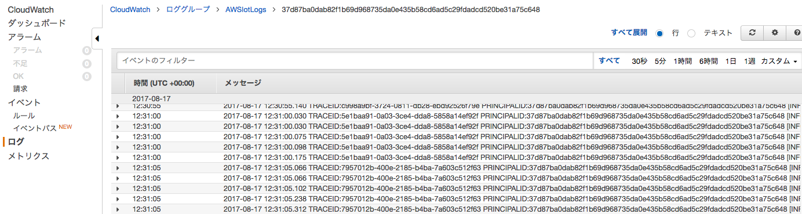

8. その他の設定（オプション）¶
8.1. CloudWatch Logsの設定¶
AWS IoTのログはCloudWatch Logsで取得可能です。トラブルシューティングなどに使用する事ができます。
マネージメントコンソールのAWS IoTを開き、[設定] を選択し、[更新] をクリックします。
次に、[ログレベル] を [情報] を選択し、[IAM ロール名] に、”AWSIoTHandsonStack-<参加者番号>-IoTLoggingRole-...” を選択し、[ロールの更新] をクリックします。
ロールが正常に更新されると、下記のメッセージが表示されます。

最後に [終了] をクリックします。
サービス：CloudWatchに移動し、”ログ”というタブをクリックします。
ロググループが表示されるので、[AWSIotLogs] をクリックすると、ログが表示されます。
